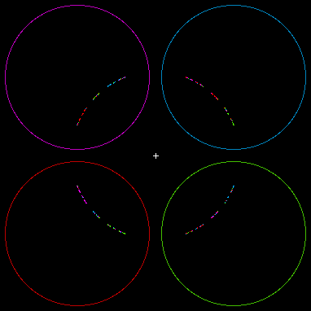

First, here is some general background on inversions.
| With appropriate collections of circles, circle inversion can generate fractals. |
| The methodology is similar to that of the random IFS algorithm: generate a sequence of points by inverting in randomly selected circles. |
| For example, this configuration produces a Cantor set wrapped around a circle. |
|  |
Return to Circle Inversion Fractals.